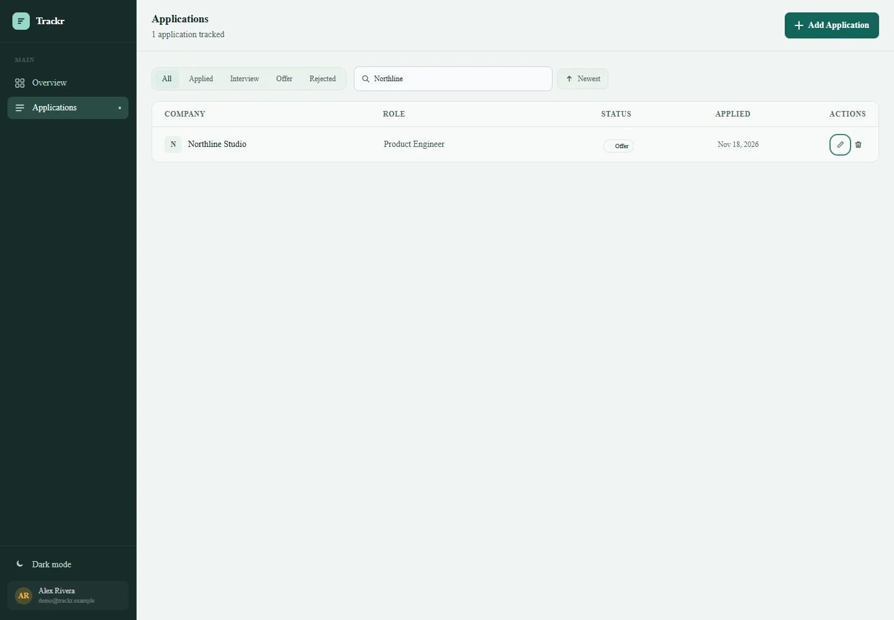
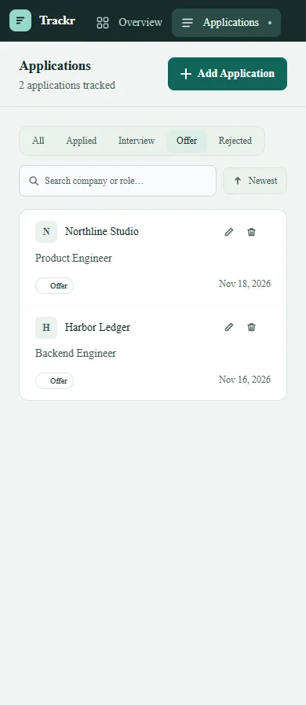

Featured project · Runtime screenshot
Job Tracker
Track applications from submission to interview and offer, with authenticated editing and focused filters.
Local demo · Project lead
Public source access pending.
My contribution
I led development of this project.
Run the local demo
From the prepared project checkout, run these commands and open the address printed by the server. The repository may require access.
cd job-tracker
npm ci
# Start the isolated PostgreSQL demo using the source README.
# Copy .env.example to .env and configure local values.
npm run db:push
node --env-file=.env prisma/seed.mjs
npm run dev -- --port 3036

Problem
Job seekers need one place to record applications, follow their pipeline and find the next role to follow up.
Architecture
Next.js App Router renders the overview and applications on the server. Client components handle forms and filters. Server Actions use Zod and ownership checks, with NextAuth sessions and Prisma persistence in PostgreSQL.
Engineering decisions
- Scope database operations to the authenticated user.
- Validate writes on the server and normalize malformed filter inputs before rendering.
Implemented workflow
- Sign in and find an application using company search and status filters.
- Edit its status, save and reload to confirm persistence.
- Try an empty company field, then submit a valid application.
Verified result
The source handoff records schema and seed checks, TypeScript, lint, a production build and browser checks for login, validation, filters and persisted edits.
- Source README, prepared screenshots and the completion handoff were reviewed. Source check results are attributed to that handoff.
Scope and next steps
- The repository is unavailable to anonymous visitors. Public source access and hosted demos are pending.
- There is no automated project test suite. Lint records one profile image warning.
- Running the demo requires PostgreSQL and the local configuration described in the source README.
Technology
Next.js · TypeScript · NextAuth · Prisma · PostgreSQL · Zod
Preview availability
Static runtime preview. No hosted interactive demo is available. The prepared improvements were verified in a local checkout and have not been pushed to GitHub; public source may differ from these captures. Use the repository documentation for the public version's setup requirements.
← Return to portfolio